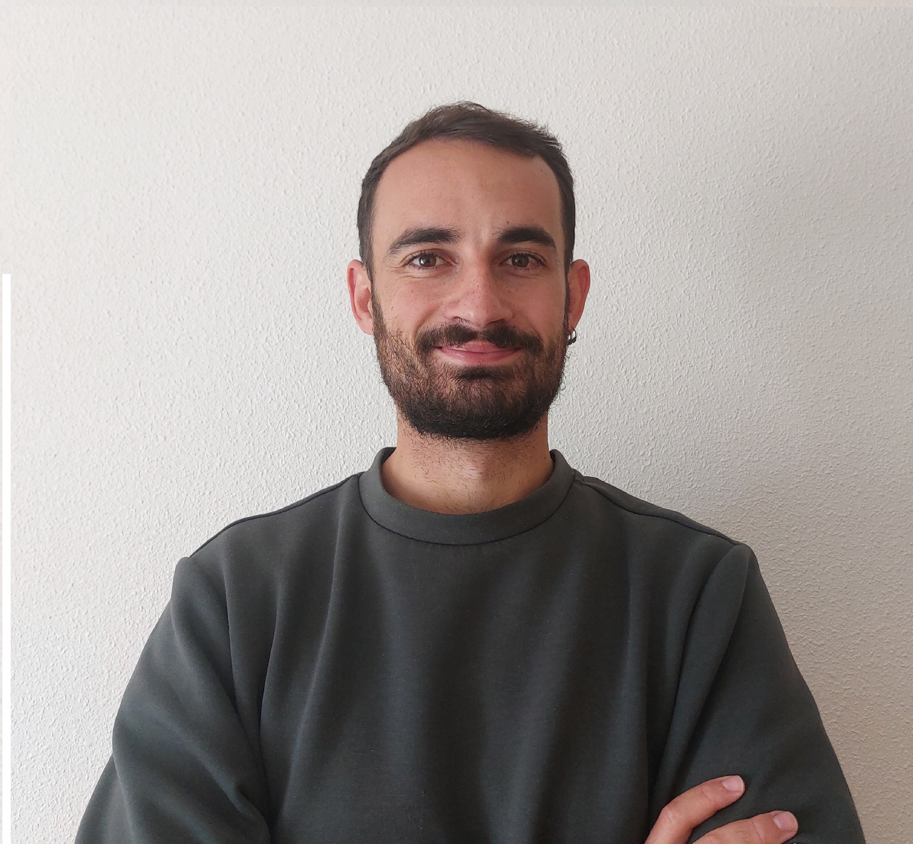

Software Engineer | Backend | Bases de datos | Integración de sistemas

Ingeniero Informático especializado en desarrollo backend, bases de datos e integración de sistemas. Tengo experiencia en el diseño, desarrollo y mantenimiento de soluciones con Python, Django, FastAPI, PostgreSQL, APIs REST, Docker y Git, con especial enfoque en la calidad del código, las buenas prácticas de desarrollo, la mantenibilidad y el diseño de soluciones robustas.
Estoy acostumbrado a trabajar en entornos colaborativos, participando en la definición técnica, optimización de aplicaciones, automatización de procesos e integración de servicios. Mi perfil está orientado a la eficiencia, la mejora continua y la creación de aplicaciones escalables, limpias y alineadas con las necesidades de negocio.
Plataforma web colaborativa para alojar, explorar y gestionar repositorios Git desde una interfaz propia, con perfiles, búsqueda, estadísticas y herramientas de colaboración.
Abrir GitWebAplicación web social centrada en League of Legends, con perfiles, estadísticas, ranking, búsquedas, chat y gestión de apuestas entre usuarios.
Abrir API RiftBuscador de gasolineras económicas durante un trayecto por España, con precios oficiales, autonomía disponible y cálculo del desvío real por carretera.
Abrir BuscaGasSi quieres hablar conmigo, escríbeme directamente o usa este formulario:
También puedes encontrarme en: